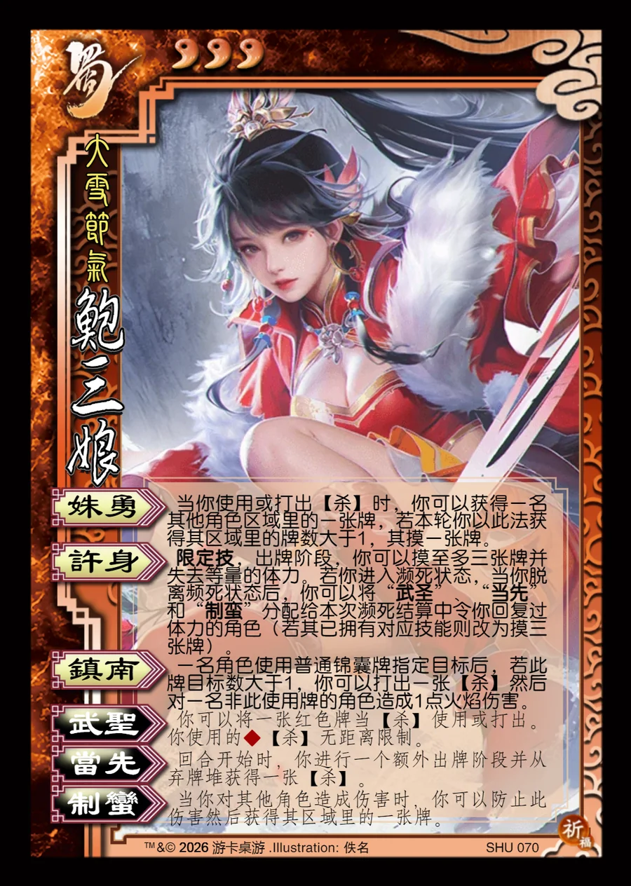

点击卡面查看大图
蜀
鲍三娘
♥3大雪节气
姝勇
当你使用或打出【杀】时，你可以获得一名其他角色区域里的一张牌，若本轮你以此法获得其区域里的牌数大于1，其摸一张牌。
许身限定技
限定技，出牌阶段，你可以摸至多三张牌并失去等量的体力。若你进入濒死状态，当你脱离频死状态后，你可以将“武圣”、“当先”和“制蛮”分配给本次濒死结算中令你回复过体力的角色（若其已拥有对应技能则改为摸三张牌）。
镇南
一名角色使用普通锦囊牌指定目标后，若此牌目标数大于1，你可以打出一张【杀】然后对一名非此使用牌的角色造成1点火焰伤害。
武圣衍生
你可以将一张红色牌当【杀】使用或打出。你使用的♦【杀】无距离限制。
当先衍生
回合开始时，你进行一个额外出牌阶段并从弃牌堆获得一张【杀】。
制蛮衍生
当你对其他角色造成伤害时，你可以防止此伤害然后获得其区域里的一张牌。